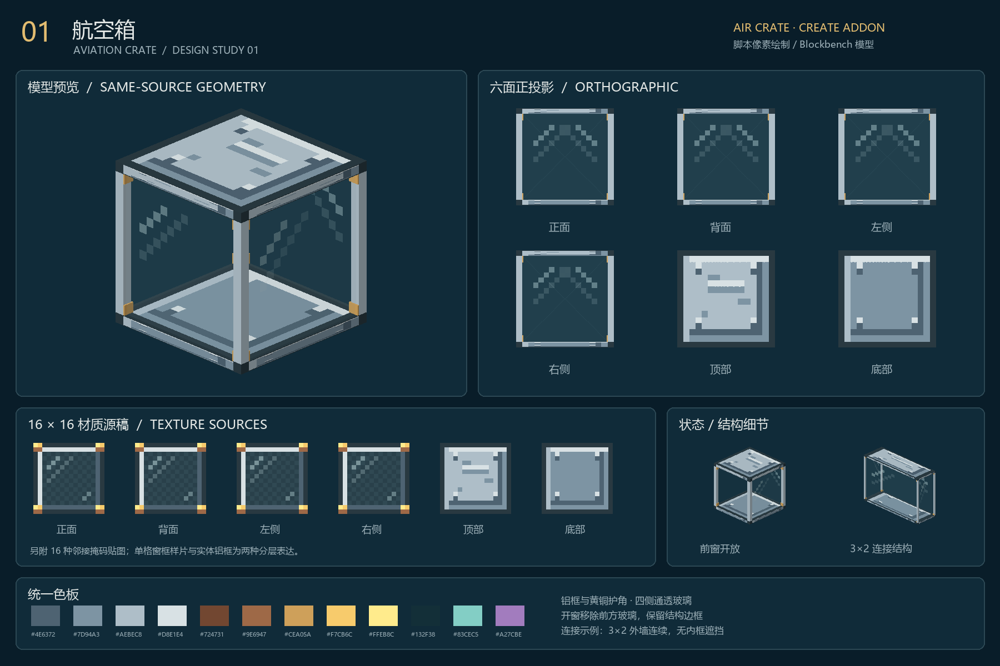
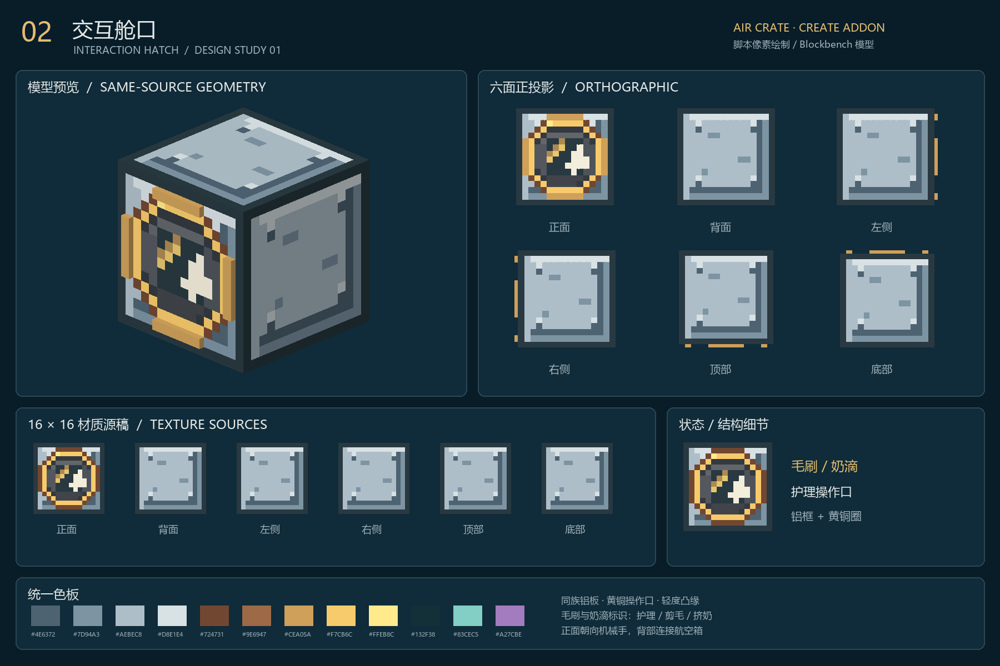
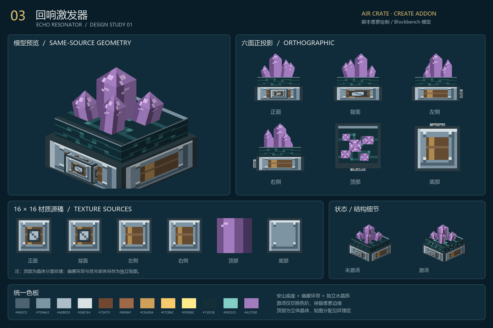
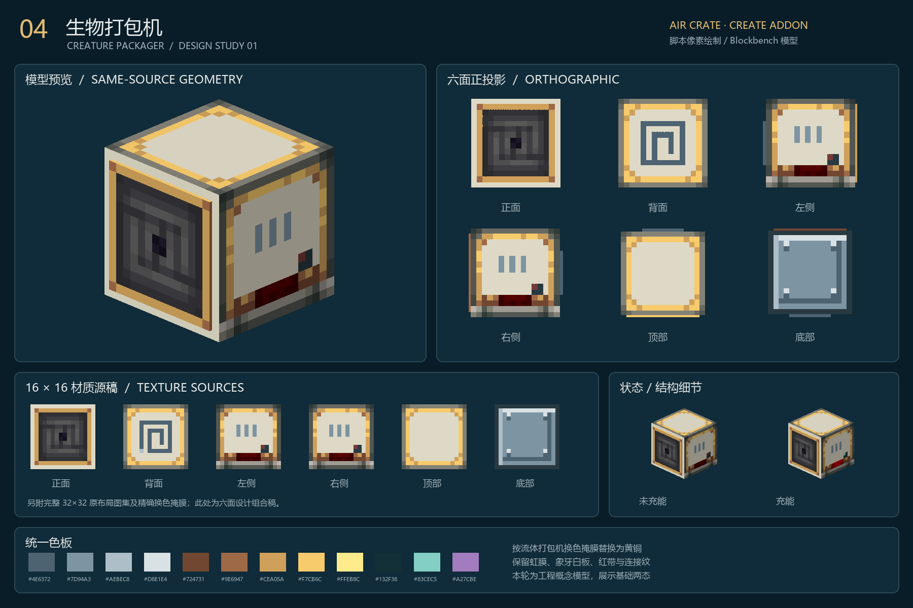
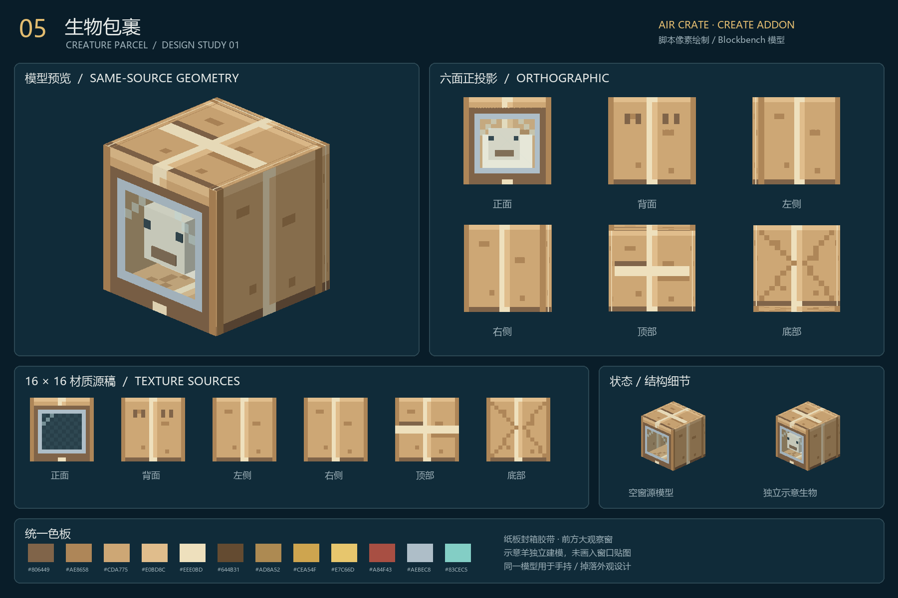
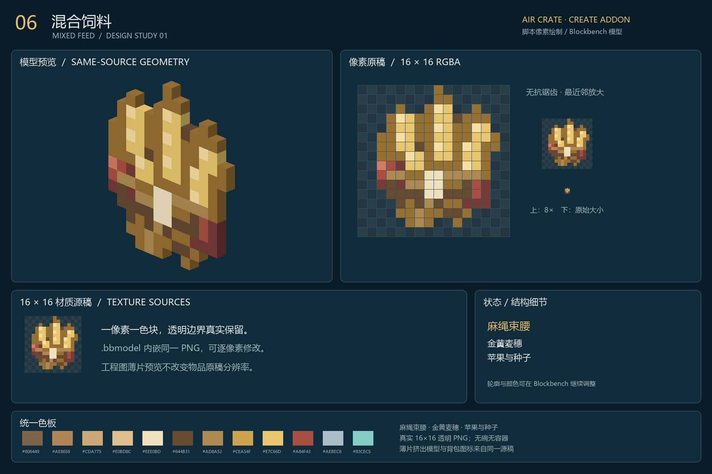
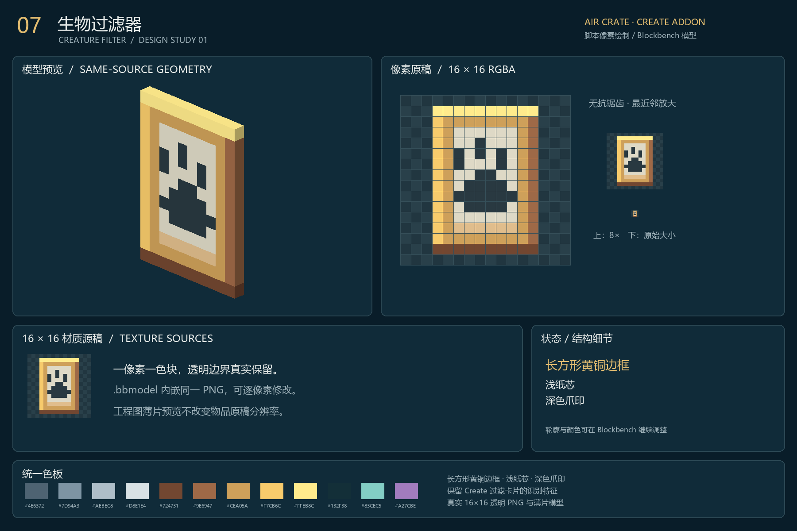
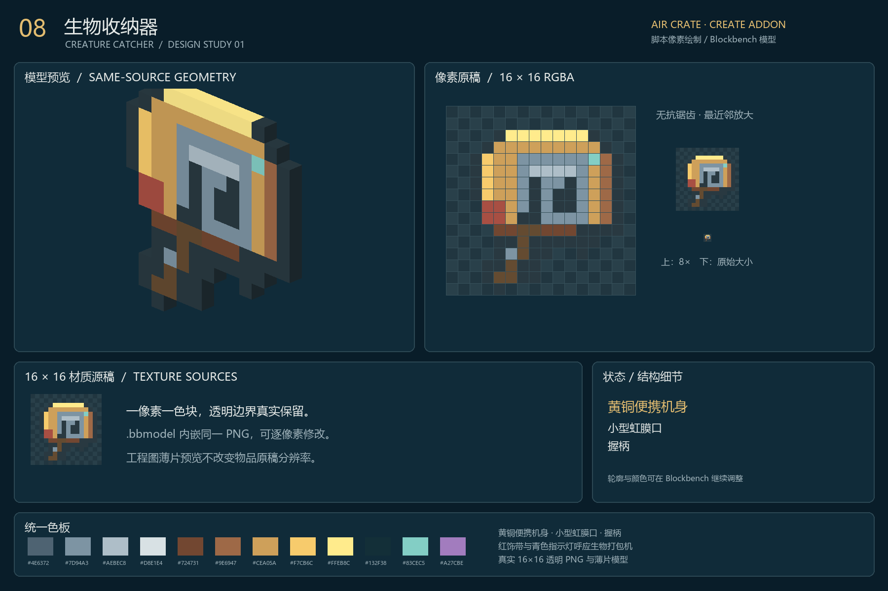

01 航空箱 AVIATION CRATE

工程图 PNGBlockbench 模型
02 交互舱口 INTERACTION HATCH

工程图 PNGBlockbench 模型
03 回响激发器 ECHO RESONATOR

工程图 PNGBlockbench 模型
04 生物打包机 CREATURE PACKAGER

工程图 PNGBlockbench 模型
05 生物包裹 CREATURE PARCEL

工程图 PNGBlockbench 模型
06 混合饲料 MIXED FEED

工程图 PNGBlockbench 模型
07 生物过滤器 CREATURE FILTER

工程图 PNGBlockbench 模型
08 生物收纳器 CREATURE CATCHER

工程图 PNGBlockbench 模型